This document describes how to set up the WatchGuard BrightGauge Connector so that BrightGauge users can view information from the WatchGuard Cloud Executive Dashboard and Security Dashboard in their BrightGauge accounts.
WatchGuard provides the BrightGauge Connector application to connect to the Firebox Reports API and schedule data synchronization between WatchGuard Cloud and BrightGauge.
WatchGuard provides integration instructions to help customers configure WatchGuard products to work with products created by other organizations. If you need more information or technical support about how to configure a third-party product, go to the documentation and support resources for that product.
Contents
Integration Summary
To complete the steps outlined in this document you must have:
- A valid WatchGuard Cloud account
- A cloud-managed Firebox or a locally-managed Firebox with WatchGuard Cloud monitoring and reporting enabled
- A valid BrightGauge account
- A database server that runs Microsoft SQL Server 2012 or higher or MySQL 5.7, 8.0, or 8.2
- A desktop computer or server with Windows 8.1 or higher and .NET Desktop Runtime 7 or higher
Integration Topology
This diagram shows the topology used in the integration. After you enable API and SQL access in the WatchGuard BrightGauge Connector application (bgconnector), you can schedule data downloads from the cloud to your BrightGauge database. The datasyncconsole application downloads data to your database, then the data appears in your BrightGauge dashboards.
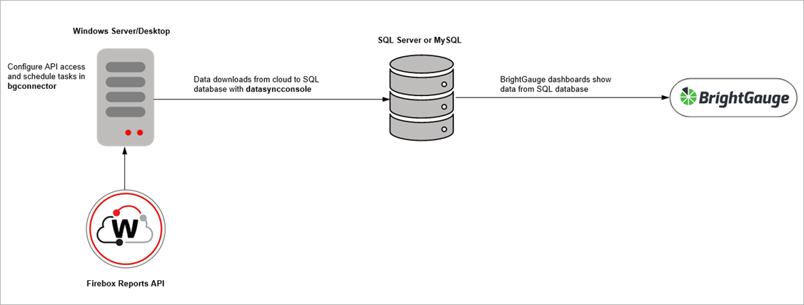
Enable API Access in WatchGuard Cloud
To use the Firebox Reports API, you must first enable API access in your WatchGuard Cloud account to retrieve the required parameters for your configuration. WatchGuard public APIs use the Open Authorization (OAuth) 2.0 authorization framework for token-based authentication. For more information, go to Enable API Access in WatchGuard Cloud.
To enable API access in WatchGuard Cloud:
- Log in to WatchGuard Cloud.
If you are a Service Provider, from Account Manager, select My Account or a managed account. - Select Administration > Managed Access.
- Click Enable API Access.
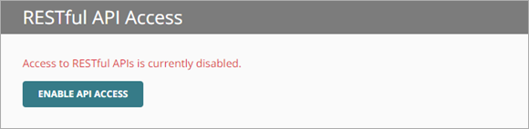
- Specify the readwrite and readonly passwords to use as your API access credentials.
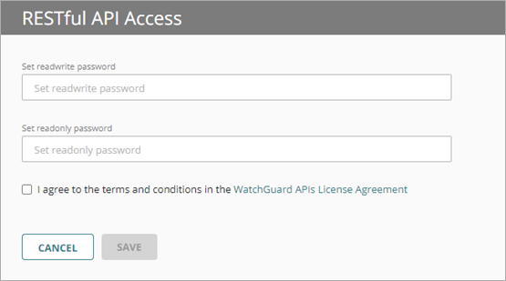
Passwords must include an uppercase letter, a lowercase letter, a number, and a special character. The readwrite password and the readonly password must be different.
You must use the readwrite access ID and password for the API configuration.
- Select the I agree to the terms and conditions in the WatchGuard APIs License Agreement check box.
- Click Save.
After you enable API access, information appears that you must specify in the BrightGauge Connector application. You can view these parameters on the Administration > Managed Access page in WatchGuard Cloud.
The base URL varies by region. This example shows a US-based server.
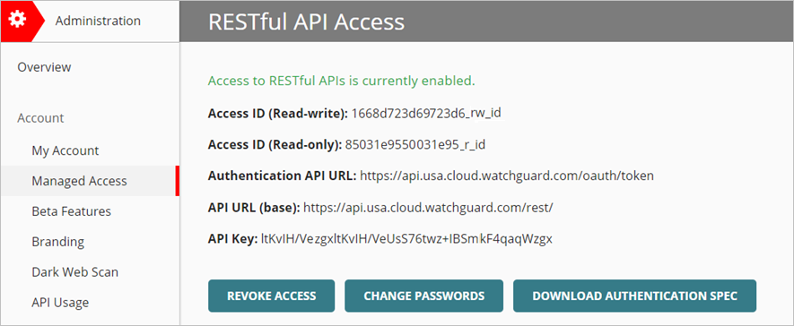
Add a Database to BrightGauge
Before you configure API access and data synchronization tasks in BrightGauge Connector, you must configure your database server and install the BrightGauge Agent.
To configure your database server and install the BrightGauge Agent:
- On your database server, create a database named wgbgconnector.
- Create a user name and password for the wgbgconnector database. The user must have full control over the schema and data manipulations of the wgbgconnector database.
- Download and install the BrightGauge Agent. For information on how to download and install the BrightGauge Agent, go to Download and Install the BrightGauge Agent.
- Configure the database connection. For information on how to configure the database connection in BrightGauge, go to Configure Datasource Settings.
Download the BrightGauge Connector Software
The BrightGauge Connector software enables you to connect to the Firebox Reports API and schedule data synchronization between WatchGuard Cloud and BrightGauge.
To download the BrightGauge Connector software, from the WatchGuard Software Downloads page:
- Go to the Software Downloads page.
- Click the Firebox image and select BrightGauge Integration.
- Click the BrightGauge Connector link.
- Save the brightgaugeconnector-<version>.ZIP file to your computer.
- Extract the contents of the brightgaugeconnector-<version>.ZIP file.
The extracted brightgaugeconnector-<version>.ZIP folder contains these files:
- bgconnector-<version>.EXE
- datasyncconsole-<version>.EXE
To open the BrightGauge Connector application, from the brightgaugeconnector-<version>folder, double-click bgconnector-<version>.EXE.
The BrightGauge Connector application opens.
The BrightGauge Connector application automatically updates to the latest version available when it opens.
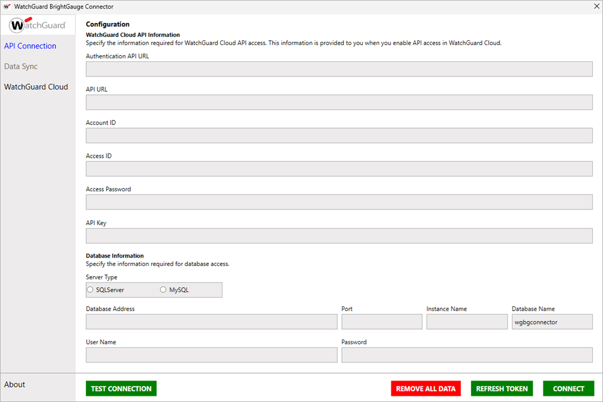
The BrightGauge Connector application has these options in the navigation pane:
- API Connection — Use this page to configure the API connection to WatchGuard Cloud.
- Data Sync — Use this page to set your data synchronization frequency between WatchGuard Cloud and BrightGauge.
- WatchGuard Cloud — Click this link to open WatchGuard Cloud in a web browser.
Configure the API Connection to WatchGuard Cloud
The information necessary to establish an API connection to WatchGuard Cloud is visible in the Managed Access page in WatchGuard Cloud after you enable API access. For more information about API access in WatchGuard Cloud, go to Enable API Access.
To avoid errors when you enter the API connection information in the BrightGauge Connector application, we recommend you copy and paste the API parameters directly from the Managed Access page in WatchGuard Cloud.
To establish the connection to WatchGuard Cloud, from the BrightGauge Connector application:
- Select API Connection.
- Enter the API information for WatchGuard Cloud:
- Authentication API URL — Type the Authentication API URL used to request an authentication token. The URL varies by region.
- APAC Region — https://api.jpn.cloud.watchguard.com/oauth/token
- EMEA Region — https://api.deu.cloud.watchguard.com/oauth/token
- NA/Americas Region — https://api.usa.cloud.watchguard.com/oauth/token
- API URL — Type the base URL of the Firebox Reports API.
The URL varies by region.
- APAC Region — https://api.jpn.cloud.watchguard.com/rest/firebox/reports
- EMEA Region —https://api.deu.cloud.watchguard.com/rest/firebox/reports
- NA/Americas Region — https://api.usa.cloud.watchguard.com/rest/firebox/reports
- Account ID — Type the WatchGuard Cloud Account ID of the managed account for which you want to make API requests. This must be the Account ID of a Service Provider or Subscriber account that you manage in WatchGuard Cloud. To view your account ID, select Administration > My Account in WatchGuard Cloud.
- Access ID — Type the access ID for readwrite API access to WatchGuard Cloud.
- Access Password — Type the password for the readwrite access ID you specified for API access to WatchGuard Cloud.
- API Key — Type the API key associated with your WatchGuard Cloud account.
- Authentication API URL — Type the Authentication API URL used to request an authentication token. The URL varies by region.
Make sure you specify the readwrite access ID and password for API access.
- Enter your database server information for the BrightGauge connection:
- Server Type — Select your server type, either SQL Server or MySQL.
- Database Address — Type the database server IP address.
- Port (Optional) — Type the port number for the database server.
- Instance Name (Optional) — Type the instance name, if any.
- Database Name — This text box is automatically populated as wgbgconnector and you cannot edit it.
- User Name — Enter the user name you created for the wgbgconnector database.
- Password — Enter the password for the wgbgconnector database.
- Click Test Connection.
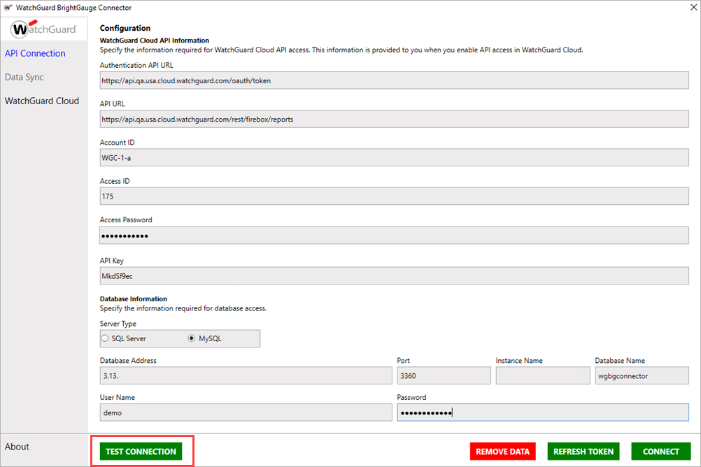If the test connection is successful, a confirmation message appears.
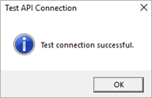
- Click OK.
- Click Connect.
If the connection is successful, a confirmation message appears.
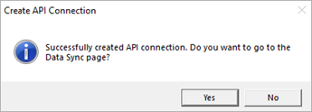
- To go to Data Sync page, click Yes.
Schedule Data Synchronization Tasks
On the Data Sync page, you can manually sync data from WatchGuard Cloud to BrightGauge or schedule data synchronization tasks. When you schedule data synchronization tasks, BrightGauge Connector creates a Windows Task Scheduler task to run datasyncconsole at the interval you specify.
To schedule a data synchronization task, from the BrightGauge Connector:
- Select Data Sync.
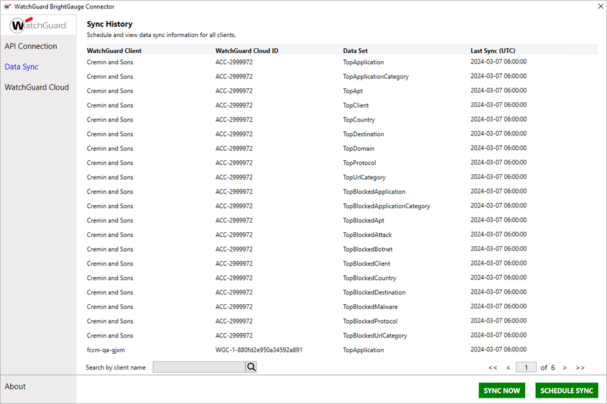
- Click Schedule Sync.
The Schedule Data Sync dialog box opens.
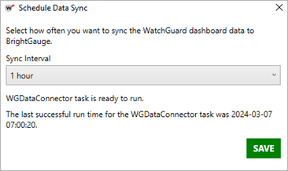
- From the Sync Interval drop-down list, select how often you want to the task to run.
- Click Save.
A confirmation message appears.
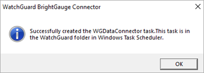
- Click OK.
The Schedule Data Sync dialog box shows the next scheduled run time.
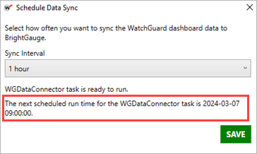
Create Datasets in BrightGauge
After you sync WatchGuard Cloud data to your database, you can create datasets in BrightGauge. In BrightGauge, datasets are used to create gauges, dashboards, and reports. When you create a dataset in BrightGauge, you use a SQL statement to retrieve the data from the database. Each category in the Executive Dashboard and Security Dashboard corresponds to a data table. These data table names are used to create SQL queries to sync the data from the table to BrightGauge.
Executive Dashboard Table
This table shows the WatchGuard Executive Dashboard categories, the corresponding table names, and sample SQL queries for SQL Server and MySQL. The example queries in the table are to synchronize data from the last 24 hours.
| Dashboard Category | Table Name | Sample SQL Server Dataset Query | Sample MySQL Dataset Query |
|---|---|---|---|
| Top Applications | TopApplication | SELECT id, ClientId, ClientName, Name, Bytes, Kbytes, Mbytes, Gbytes, time FROM TopApplication WHERE time > DATEADD(DAY, -1, GETUTCDATE()) AND Name IS NOT NULL | select id, clientname, clientid, name, bytes, kbytes, mbytes, gbytes, hits, time from TopApplication where time > utc_timestamp() - interval 1 day and name is not null |
|
Top Application Categories |
TopApplicationCategory | SELECT id, ClientId, ClientName, Name, Bytes, Kbytes, Mbytes, Gbytes, time FROM TopApplicationCategory WHERE time > DATEADD(DAY, -1, GETUTCDATE()) AND Name IS NOT NULL | select id, clientname, clientid, name, bytes, kbytes, mbytes, gbytes, hits, time from TopApplicationCategory where time > utc_timestamp() - interval 1 day and name is not null |
| Top Zero-Day Malware (APT) | TopApt | SELECT id, ClientId, ClientName, Name, time FROM TopApt WHERE time > DATEADD(DAY, -1, GETUTCDATE()) AND Name IS NOT NULL | select id, clientname, clientid, name, hits, time from TopApt where time > utc_timestamp() - interval 1 day and name is not null |
| Top Clients | TopClient | SELECT id, ClientId, ClientName, Name, Bytes, Kbytes, Mbytes, Gbytes, time FROM TopClient WHERE time > DATEADD(DAY, -1, GETUTCDATE()) AND Name IS NOT NULL | select id, clientname, clientid, name, bytes, kbytes, mbytes, gbytes, hits, time from TopClient where time > utc_timestamp() - interval 1 day and name is not null |
| Top Countries | TopCountry | SELECT id, ClientId, ClientName, Name, Bytes, Kbytes, Mbytes, Gbytes, time FROM TopCountry WHERE time > DATEADD(DAY, -1, GETUTCDATE()) AND Name IS NOT NULL | select id, clientname, clientid, name, bytes, kbytes, mbytes, gbytes, hits, time from TopCountry where time > utc_timestamp() - interval 1 day and name is not null |
| Top Destinations | TopDestination | SELECT id, ClientId, ClientName, Name, Bytes, Kbytes, Mbytes, Gbytes, time FROM TopDestination WHERE time > DATEADD(DAY, -1, GETUTCDATE()) AND Name IS NOT NULL | select id, clientname, clientid, name, bytes, KBytes, MBytes, GBytes, hits, time from TopDestination where time > utc_timestamp() - interval 1 day and name is not null |
| Top Domains | TopDomain | SELECT id, ClientId, ClientName, Name, Bytes, Kbytes, Mbytes, Gbytes, time FROM TopDomain WHERE time > DATEADD(DAY, -1, GETUTCDATE()) AND Name IS NOT NULL | select id, clientname, clientid, name, bytes, kbytes, mbytes, gbytes, hits, time from TopDomain where time > utc_timestamp() - interval 1 day and name is not null |
| Top Protocols | TopProtocol | SELECT id, ClientId, ClientName, Name, Bytes, Kbytes, Mbytes, Gbytes, time FROM TopProtocol WHERE time > DATEADD(DAY, -1, GETUTCDATE()) AND Name IS NOT NULL | select id, clientname, clientid, name, bytes, kbytes, mbytes, gbytes, hits, time from TopProtocol where time > utc_timestamp() - interval 1 day and name is not null |
| Top URL Categories | TopUrlCategory | SELECT id, ClientId, ClientName, Name, time FROM TopUrlCategory WHERE time > DATEADD(DAY, -1, GETUTCDATE()) AND Name IS NOT NULL | select id, clientname, clientid, name, hits, time from TopUrlCategory where time > utc_timestamp() - interval 1 day and name is not null |
Security Dashboard Table
This table shows the WatchGuard Security Dashboard categories, the corresponding table names, and sample SQL queries for SQL Server and MySQL. The example queries in the table are to synchronize data from the last 24 hours.
| Dashboard Category | Table Name | Sample SQL Server Dataset Query | Sample MySQL Dataset Query |
|---|---|---|---|
| Top Blocked Applications | TopBlockedApplication | SELECT id, ClientId, ClientName, Name, time FROM TopBlockedApplication WHERE time > DATEADD(DAY, -1, GETUTCDATE()) AND Name IS NOT NULL | select id, clientname, clientid, name, hits, time from TopBlockedApplication where time > utc_timestamp() - interval 1 day and name is not null |
| Top Blocked Application Categories | TopBlockedApplicationCategory | SELECT id, ClientId, ClientName, Name, time FROM TopBlockedApplicationCategory WHERE time > DATEADD(DAY, -1, GETUTCDATE()) AND Name IS NOT NULL | select id, clientname, clientid, name, hits, time from TopBlockedApplicationCategory where time > utc_timestamp() - interval 1 day and name is not null |
| Top Blocked Advanced Malware (APT) | TopBlockedApt | SELECT id, ClientId, ClientName, Name, time FROM TopBlockedApt WHERE time > DATEADD(DAY, -1, GETUTCDATE()) AND Name IS NOT NULL | select id, clientname, clientid, name, hits, time from TopBlockedApt where time > utc_timestamp() - interval 1 day and name is not null |
| Top Blocked Attacks | TopBlockedAttack | SELECT id, ClientId, ClientName, Name, time FROM TopBlockedAttack WHERE time > DATEADD(DAY, -1, GETUTCDATE()) AND Name IS NOT NULL | select id, clientname, clientid, name, hits, time from TopBlockedAttack where time > utc_timestamp() - interval 1 day and name is not null |
| Top Blocked Botnet Sites | TopBlockedBotnet | SELECT id, ClientId, ClientName, Name, time FROM TopBlockedBotnet WHERE time > DATEADD(DAY, -1, GETUTCDATE()) AND Name IS NOT NULL | select id, clientname, clientid, name, hits, time from TopBlockedBotnet where time > utc_timestamp() - interval 1 day and name is not null |
| Top Blocked Clients | TopBlockedClient | SELECT id, ClientId, ClientName, Name, time FROM TopBlockedClient WHERE time > DATEADD(DAY, -1, GETUTCDATE()) AND Name IS NOT NULL | select id, clientname, clientid, name, hits, time from TopBlockedClient where time > utc_timestamp() - interval 1 day and name is not null |
| Top Blocked Countries | TopBlockedCountry | SELECT id, ClientId, ClientName, Name, time FROM TopBlockedCountry WHERE time > DATEADD(DAY, -1, GETUTCDATE()) AND Name IS NOT NULL | select id, clientname, clientid, name, hits, time from TopBlockedCountry where time > utc_timestamp() - interval 1 day and name is not null |
| Top Blocked Destinations | TopBlockedDestination | SELECT id, ClientId, ClientName, Name, time FROM TopBlockedDestination WHERE time > DATEADD(DAY, -1, GETUTCDATE()) AND Name IS NOT NULL | select id, clientname, clientid, name, hits, time from TopBlockedDestination where time > utc_timestamp() - interval 1 day and name is not null |
| Top Blocked Malware | TopBlockedMalware | SELECT id, ClientId, ClientName, Name, time FROM TopBlockedMalware WHERE time > DATEADD(DAY, -1, GETUTCDATE()) AND Name IS NOT NULL | select id, clientname, clientid, name, hits, time from TopBlockedMalware where time > utc_timestamp() - interval 1 day and name is not null |
| Top Blocked Protocols | TopBlockedProtocol | SELECT id, ClientId, ClientName, Name, time FROM TopBlockedProtocol WHERE time > DATEADD(DAY, -1, GETUTCDATE()) AND Name IS NOT NULL | select id, clientname, clientid, name, hits, time from TopBlockedProtocol where time > utc_timestamp() - interval 1 day and name is not null |
| Top Blocked URL Categories | TopBlockedUrlCategory | SELECT id, ClientId, ClientName, Name, time FROM TopBlockedUrlCategory WHERE time > DATEADD(DAY, -1, GETUTCDATE()) AND Name IS NOT NULL | select id, clientname, clientid, name, hits, time from TopBlockedUrlCategory where time > utc_timestamp() - interval 1 day and name is not null |
To create a dataset, from BrightGauge:
We recommend you sync WatchGuard Cloud and your database before you create datasets in BrightGauge. For more information, go to Schedule Data Synchronization Tasks.
- From the Data drop-down list, select Datasets.
- Click Create Dataset.
- From the Datasource drop-down list, select your database.
- In the Name text box, enter a name for the dataset.
- From the Dashboard Sync Frequency drop-down list, select how often you want the dataset to sync with the dashboard.
- In the Description text box, enter a description for the dataset.
- In the SQL section, enter your SQL query. Refer to the Executive Dashboard Table and Security Dashboard Table for example SQL queries.
- Click Test Query.
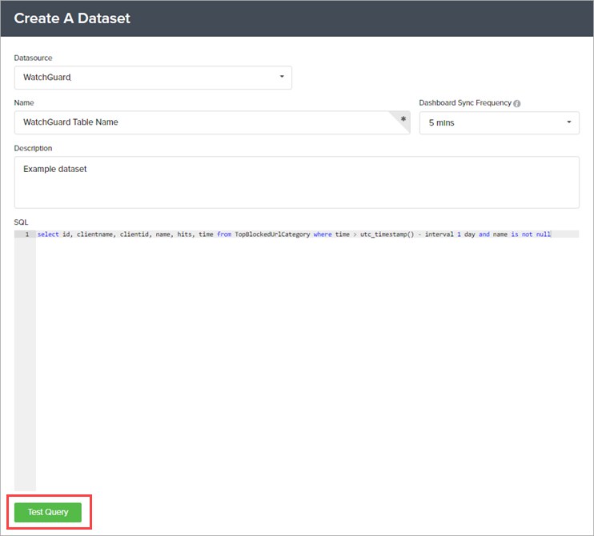
If the test is successful, the Save button appears.
- Click Save.
Manage the BrightGauge Connector
You can use the BrightGauge Connector application to complete these actions:
Test the Connection
You can use the Test Connection feature to troubleshoot issues with the API connection. When you test the connection and there are connection issues, an error message appears with information about the cause.
We recommend that you test the connection before you try to connect to WatchGuard Cloud.
- Select API Connection.
- Enter the API information for WatchGuard Cloud. For more information, go to Configure the API Connection to WatchGuard Cloud.
- Enter your database information for the BrightGauge connection. For more information, go to Configure the API Connection to WatchGuard Cloud.
- Click Test Connection.
If the test connection is successful, a confirmation message appears.
- Click OK.
Refresh the Token
If you detect or suspect a security breach, you can change the API token.
- Select API Connection.
- Enter the API information for WatchGuard Cloud. For more information, go to Configure the API Connection to WatchGuard Cloud.
- Enter your database information for the BrightGauge connection. For more information, go to Configure the API Connection to WatchGuard Cloud.
- Click Refresh Token.
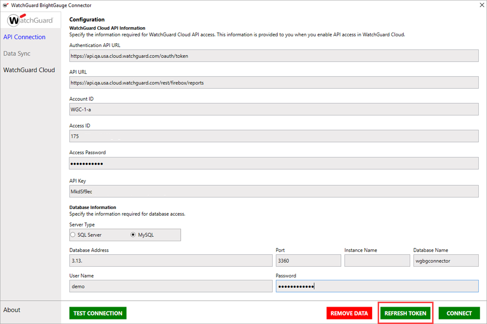A message appears to confirm you want to refresh the token.
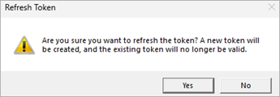
- Click Yes.
The token used to authenticate with the WatchGuard API refreshes.
Remove Data
You can remove the API connection and database data, or remove only the database data. When you remove the API connection data, you delete the API connection to WatchGuard Cloud and remove access to your WatchGuard client settings.
- Select API Connection.
- Enter the API information for WatchGuard Cloud. For more information, go to Configure the API Connection to WatchGuard Cloud.
- Enter your database information for the BrightGauge connection. For more information, go to Configure the API Connection to WatchGuard Cloud.
- Click Remove Data.
The Remove Data dialog box appears.
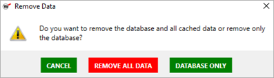
- To remove all cached and database data, click Remove All Data. To remove only the database data, click Database Only.
The selected data is removed.